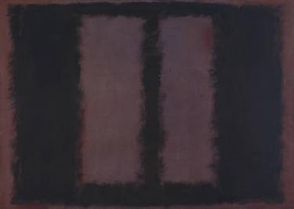

Black on Maroon
Mark Rothko · 1958 · Oil paint, acrylic paint, glue tempera and pigment on canvas · 266.7 × 381.2 cm · Tate, London
In copyright. Look and learn: shown for study, not for download.
Rothko painted this for the Four Seasons restaurant in the Seagram Building in New York, working under scaffolding built to the exact size of the dining room in his studio on the Bowery. After about eight months on three series of paintings he decided the pictures and the room did not suit each other, kept them and returned the money he had been paid. The base coat is powder pigment stirred into rabbit-skin glue, and the black was put on with a large decorator's brush. It was the first of nine Seagram paintings he gave to the Tate, in 1968.